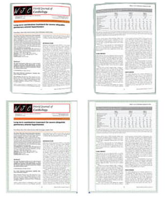
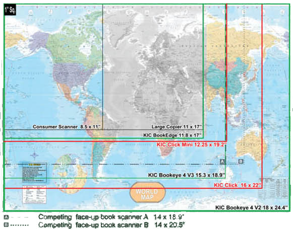
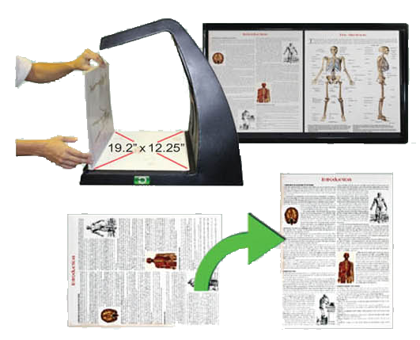

Beautiful Images - Fast and Easy, and Nondestructive
Capture Deep into the Bookfold
KIC Click's Dual Cameras are Set at the Perfect Angles
Most books curve at the spine - some rather dramatically. KIC Click gets deep into the bookfold of tightly-bound volumes by capturing from two angles, and easily straightens out the worst curves, producing clear, professional quality images.
Fast, Face-Up Scanning that Captures Into the Book Fold Like No Other Machine
Thick Books...No Problem
KIC Click handles thick books beautifully. Text is clear and undistorted. KIC automatically adds margins for print-ready image quality.
Capture Area Comparison
KIC Click's ample 16 X 22 inch capture area is over 50% larger than that of 11x17 inch copiers and twice that of typical consumer scanners. It handles a large percentage of books that are too big for an 11x17 inch scan bed, scanning them two pages at a time without damage to their spines.
KIC Click's high speed is derived as much from its ultra-simple, true two-touch interface as from its face-up design that obviates the need to flip books over and over again during the capture process.
KIC Click's sleek look and elegant design put the full KIC self-serve digitization functionality into a mere 25 inch width. Its large, 22 inch touch screen and capture surface are at the perfect heights for quick, standing operation when placed on a typical table or its optional K-legs.
Capture Oversized Books
KIC Click Mini's generous 12.25 X 19.2 inch capture area is 27% larger than that of 11x17 inch copiers and about twice that of typical consumer scanners. It easily handles books that are too big for an 11x17 inch scan bed, scanning them two pages at a time without damage to their spines.
Very large volumes can be scanned sideways, one page at a time and rotated.
